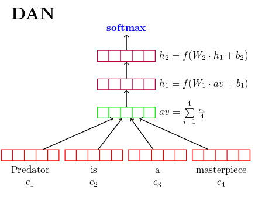

Building Neural Network Models for
Information Retrieval
Keith Chewning
Data: Queries
- Internet search queries
- Challenges:
- query ambiguity, e.g. baseball strike
- misspellings, e.g. bleutooth
- abbreviations, e.g. BSOD, win 8
- solution ambiguity
Data: Documents
- Raw HTML pages
- Challenges
- Missing page content
- HTML page “cleaning”
- Unicode and non-English text
Data: Event Logging
- Searches
- Clicks
- Redirects
- etc.
Objectives
- Model-based document retrieval
- Generalization to answer other questions then just IR
- Recommendations may be fuzzy
First Models
Do not forget about the simple things
- Vector space models and TF-IDF
- Latent Semantic Indexing (LSI)
Motivation
- Learn mapping: query space to document space
Moving to Neural Networks
LSI-based models
- Input: LSI query vector
- Output: LSI document vector
Word2Vec and Doc2Vec
- Input: word vector averages, query centroid
- Alternative input: Doc2Vec query vector
- Output: document vector
Challenges
- Learning arbitrary vectors
Language Model Architecture Research
Deep Unordered Composition Rivals Syntactic Methods
for Text Classification, Iyyer, et al.

Language Model Architecture Research Continued…
Convolutional Neural Networks for Sentence Classification, Yoon Kim

Challenges with these models
- Embeddings
- Classification models
- What are we classifying, documents?
- Large number of classes
- Potential solution: hierarchical softmax
Prior Research with IR Models
Discovering Binary Codes for Documents by Learning Deep Generative Models,
Hinton, et al.

- Challenges
- Vocabulary size is too small
Prior Research with IR Models Continued…
Learning Deep Structured Semantic Models for Web Search using Clickthrough Data, Huang, et al.

- Challenges
- What about weight sharing?
- How is a document represented?
- How is this model used at prediction time?
Network Solution
- Deep stacked autoencoder, similar to the Hinton architecture
- Deep: multi-layer network
- Stacked: layer-wise pre-trained
- Autoencoder: identity function
- Model input: character hashing
- robust against abbreviations, misspellings, out of vocabulary words
Network Solution Continued…
- Fine-tuning after layer-wise pre-training
- Embedding: a latent semantic representation
- Vector operations on embeddings
- Training set: queries
- Documents: query context
What types of questions can this type of architecture answer?
- User query: find other similar queries
- User query: find most relevant documents
- Document: find most similar documents
- Query: document ranking
- Similarities: use with classification models